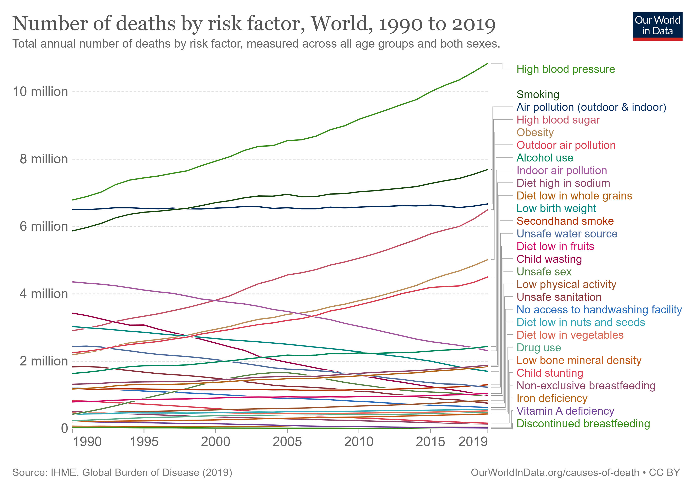

Projects
Sentiment Analysis on Climate Change Tweets

BERT
NLP
Python
Machine Learning
A comprehensive sentiment analysis project analyzing 100,000 tweets about climate change using BERT. This project demonstrates advanced NLP techniques and deep learning applications in social media analysis.
View on GitHub →Monte Carlo Stock Market Simulation

Python
Financial Analysis
Monte Carlo
Statistical Modeling
Data Visualization
A sophisticated Monte Carlo simulation tool for analyzing stock market scenarios and portfolio performance. This project implements advanced statistical methods to model potential market outcomes and risk assessment.
- Stock price prediction using geometric Brownian motion
- Multiple scenario analysis with varying market conditions
- Risk assessment and probability distribution analysis
- Interactive visualizations of simulation results
Water Potability Prediction

Python
Machine Learning
Data Analysis
Scikit-learn
Statistical Analysis
A machine learning project focused on predicting water potability using various water quality metrics. The project implements multiple classification models to determine if water is safe for consumption based on chemical and physical properties.
- Data preprocessing and feature engineering
- Implementation of multiple ML models for comparison
- Detailed analysis of water quality parameters
- Performance evaluation and model selection